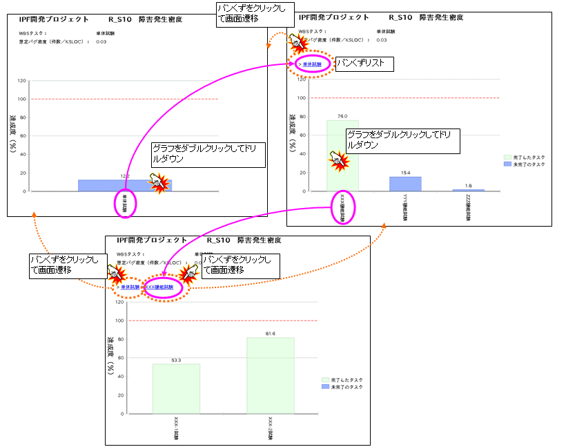
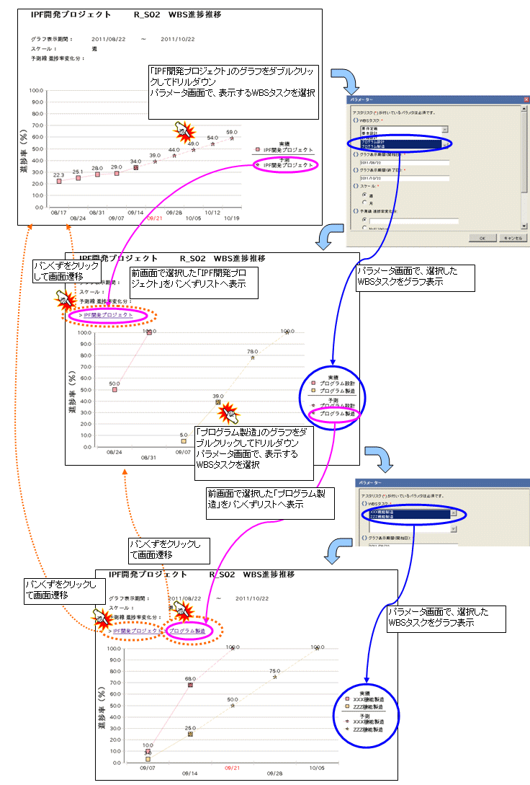

パンくずリストは各グラフ内での遷移履歴（ドリルダウン時のパラメータ）を保持し、ヘッダエリアに表示します。
パンくずリストを選択すると、特定時点のグラフ表示に戻ります。
ドリルダウンを実行し、最下位まで到達した場合、最下位の情報はパンくずリスト上で表示しません。
パンくずリストから特定時点の画面へ戻った場合、特定時点の画面までの遷移情報をパンくずリストに表示します。
ドリルダウン時には、そのまま遷移するグラフと、パラメータ画面を表示して、表示対象を選択するグラフの２パターンあります。

